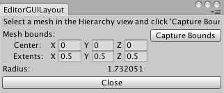

EditorGUI.BoundsField
Parameters
| position | Rectangle on the screen to use for the field. | |
| label | Optional label to display above the field. | |
| value | The value to edit. |
Returns
Bounds The value entered by the user.
Description 描述
Makes Center and Extents field for entering a Bounds.

Bounds field in an Editor Window.
See also Extending the editor.
using UnityEngine; using UnityEditor;
// Simple script that shows radius of bounds of selected MeshFilter
class EditorGUILayoutBoundsField : EditorWindow { float radius = 0; Bounds bounds;
[MenuItem("Examples/Show Radius of mesh bounds")] static void Init() { var window = GetWindow<EditorGUILayoutBoundsField>(); window.Show(); }
void OnGUI() { GUILayout.Label("Select a mesh in the Hierarchy view and click 'Capture Bounds'"); EditorGUILayout.BeginHorizontal(); bounds = EditorGUILayout.BoundsField("Mesh bounds:", bounds);
if (GUILayout.Button("Capture Bounds") && Selection.activeTransform) { MeshFilter meshFilter = Selection.activeTransform.GetComponentInChildren<MeshFilter>(); if (meshFilter) { bounds = meshFilter.sharedMesh.bounds; } } EditorGUILayout.EndHorizontal();
EditorGUILayout.LabelField("Radius:", bounds.size.magnitude.ToString()); if (GUILayout.Button("Close")) { this.Close(); } } }